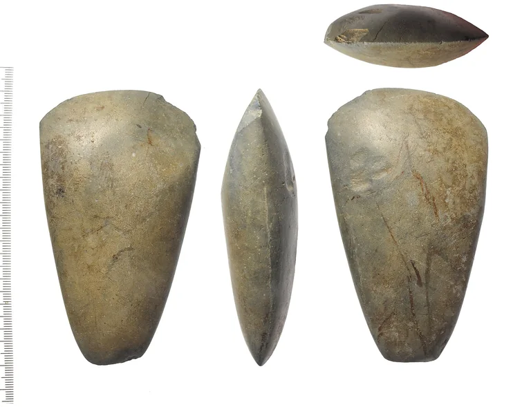
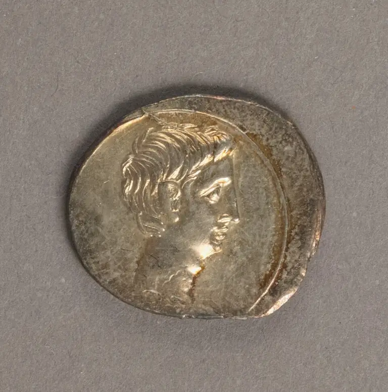
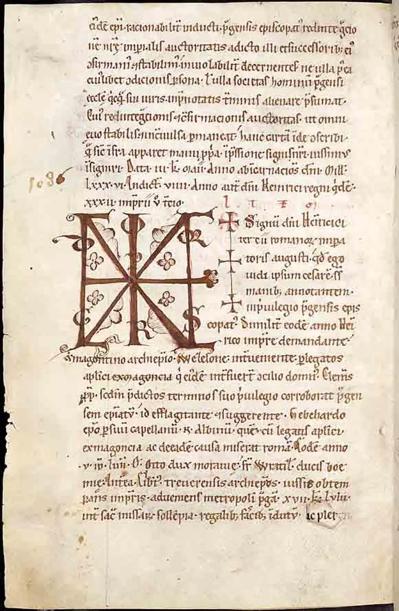
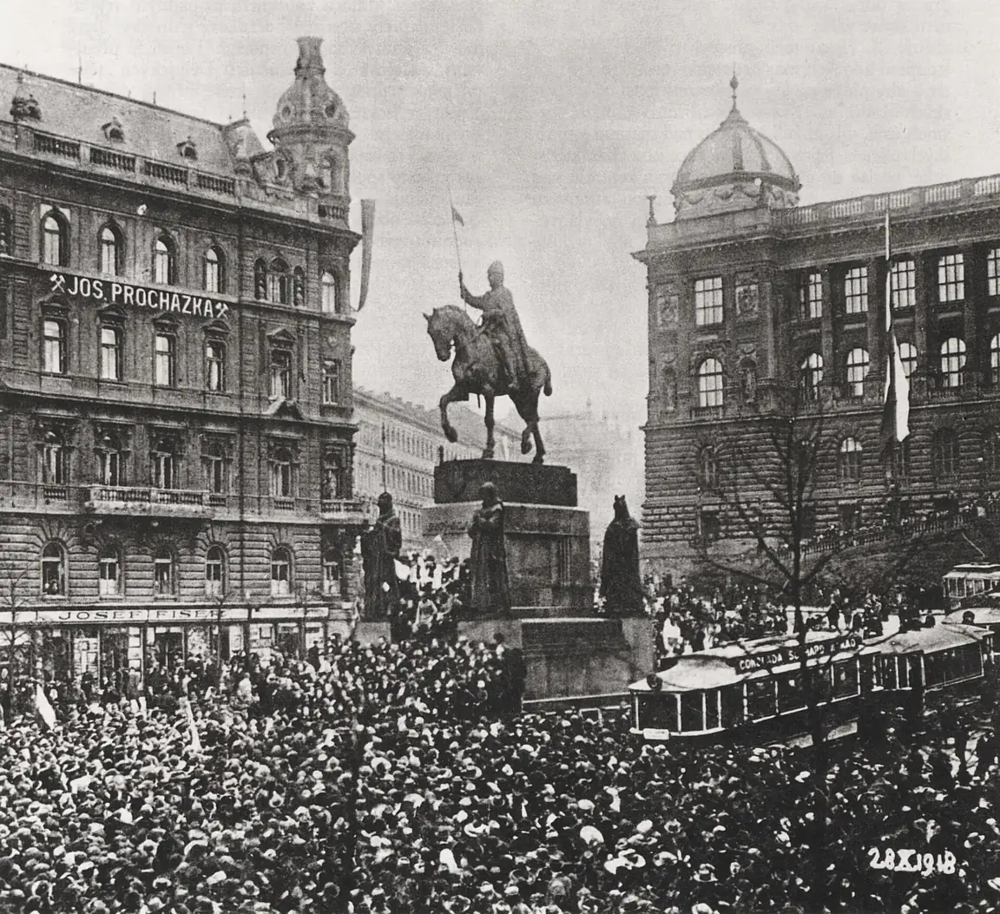
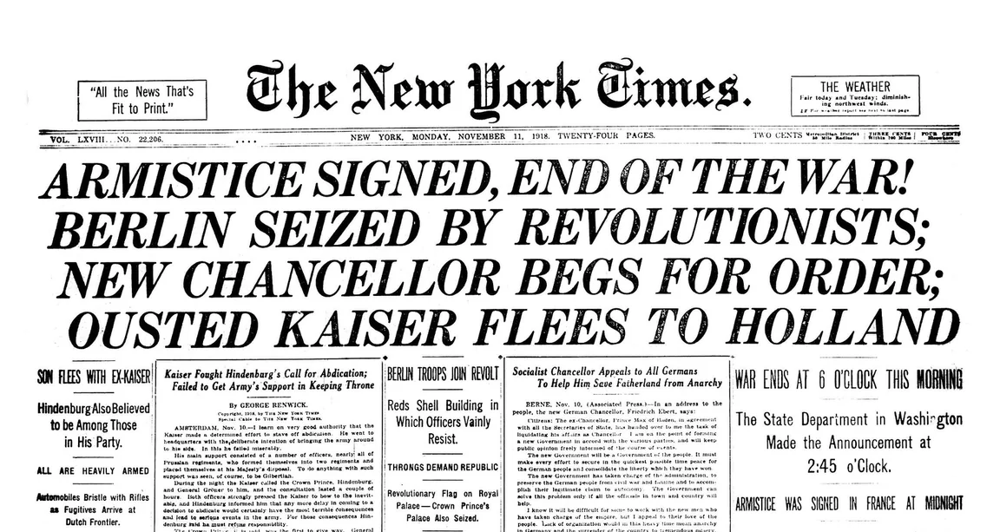
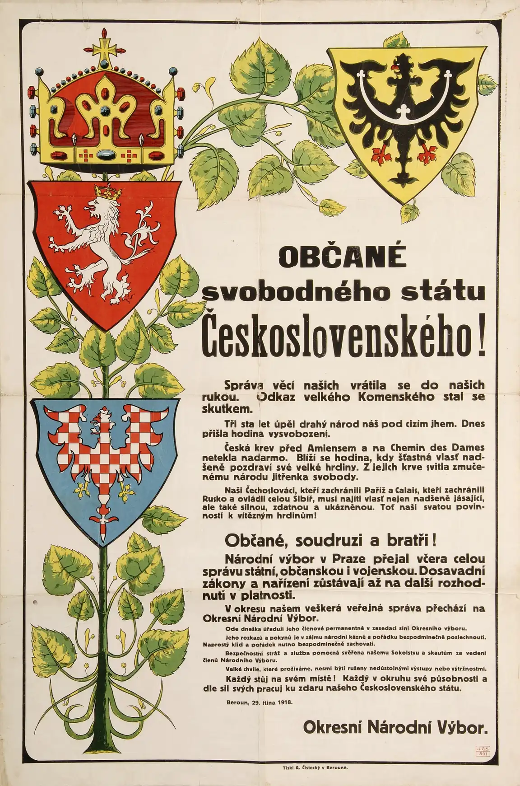
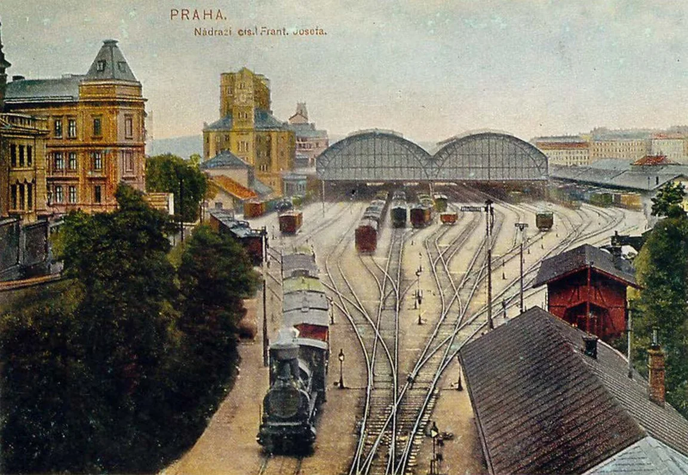

Pro 6. ročník: dějepisné prameny, počítání letopočtů a historická období.
Po této lekci dokážu určit původ a účel pramene a doložit závěr konkrétními slovy.
6. ročník · přibližně 15 minut · Nejdřív: Časová osa.
Pro učitele: 5 / 15 / 45 minut
5 minut: společně projděte vedenou aktivitu a nechte žáky vysvětlit výsledek.
15 minut: nejprve vlastní předpověď, pak ověření a několik úloh z procvičování.
45 minut: práce ve dvojicích, vlastní obměna příkladu a závěrečné vysvětlení bez nápovědy.
Procvičování
Hmotné prameny jsou předměty (nádoby, zbraně, stavby), písemné jsou texty
(kroniky, listiny, dopisy). Letopočty před naším letopočtem jdou pozpátku –
rok 500 př. n. l. je starší než rok 200 př. n. l.
Osm skutečných pramenů
Prameny třídíme podle toho, co nesou: hmotné jsou předměty, písemné nesou text, obrazové zachycují obraz. Vyzkoušej si to v režimu „Roztřiď prameny z fotek“.

Broušená kamenná sekeraHmotný pramen z mladší doby kamenné. Nic na ní není napsáno – o jejím stáří a použití vypovídá materiál, tvar a místo nálezu.

Římská minceHmotný pramen. Stříbrný denár Octaviana (Augusta) prozradí, jak vypadal panovník, z čeho se razily peníze a kam sahal římský obchod.Zlatá bula sicilská (1212)Písemný pramen. Listina Fridricha II. (pozdějšího císaře) potvrdila českým panovníkům královský titul; zlatá pečeť dokládá, že je pravá.

Kosmova kronika ČechůPísemný pramen. Nejstarší kronika našich dějin, kterou ve 12. století latinsky sepsal Kosmas. Tuto stránku opsal písař o něco později.

Dobová fotografie (28. 10. 1918)Obrazový pramen. Dav na Václavském náměstí v den vzniku Československa. Fotografie ukazuje, kolik lidí přišlo a jak vypadalo město.

Noviny z 11. listopadu 1918Písemný pramen. Americký deník oznamuje příměří a konec první světové války. Noviny ukazují, co se lidé o události dozvěděli ještě týž den.

Plakát z 29. října 1918Vyhláška národního výboru v Berouně den po vzniku republiky. Převažuje text, proto ho řadíme k písemným pramenům; znaky jsou jen výzdoba.

Pohlednice (kolem 1907)Obrazový pramen. Pražské nádraží Františka Josefa (dnes hlavní nádraží) ještě před dostavbou nové budovy – parní vlaky a staré střechy.